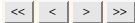

The objects in the database are sorted out by the filter before they are exported from the database. The filter consists of a GQL statement, Genetic Query Language, which is based on SQL. An introduction to the GQL language can be found here.
Notice: If the same filter is used twice, the output from the filter may not be the same both times due to data manipulation in the database, object could have been added, changed or deleted.
Go directly to:
View & Edit
New Filter
Filters - Edit
The filters can be displayed according to the Species, Name and Expression. To create a new filter the button is clicked. By clicking the Edit text the name, comment and GQL statement can be changed in the "Edit" view.
The name and the species, which is filter specific, has to be given before the filter is created. The GQL statement can be tested and changed in the "Edit" view where the name and comment also can be changed.
The name, comment and GQL statement can be changed in the respective text boxes and updated by clicking the button. The number of objects returned by the statement is displayed in the Result field and the Status displays "Error" if the GQL statement was faulty and "OK" if it was correct. The error message generated by faulty statements can be viewed by clicking on the button. The SQL statement generated by the GQL statement can be viewed by clicking on the button. The filter can also be deleted on this page.
Notice: No history is kept for this feature, if the name, comment or GQL statement is changed, the old values cannot be traced and deleted filters cannot be recovered. It is recommended not to change the GQL statement to a particular name since it could confuse the users.
The objects in the database are sorted out according to a user defined filter and each export consists of a set of files according to a chosen output format. The filter expression is executed on one or more sampling units and the marker and variable sets can be given.
Go directly to:
View & Edit
Export - Edit
Export - Details
Export - Details - Files
Export file
Export file - New - Start GTF(1)
Export file - New - Start GTF(2)
Export file - New - Start GTF(3)
The content in the exported files is generated by a filter. Each export contains a set of files which can be viewed in the "Export - Details" view by clicking the Download text.
Each export consists of a set of files, which are displayed in the "Export - Details - Files" view, and it is the export name that is given on this page. The date should be given as YYYY-MM-DD and the other parameters have the following values:
Format:
The objects can be displayed sorted by Name, Mode, Format, Comment, User and Update, by clicking on the respective text. The "Export - Edit" page is retrieved by clicking on the Edit text and the "Export - Details" page by clicking the Details text respectively.
The name and comment of the exported set of files can be changed. The exported file set can also be deleted.
The static data is shown and by clicking on the Download text the files included in the export are displayed.
The files shown in the figure shows the general table format output files. The object data is stored in the data_1061.txt file and information about user, format etc. is stored in the log_1062.txt file. The number, 1061, in the file names are the file id that should be given if any results related to the export is stored back into the database. If the id is given when the result is stored, the results will be linked to the individuals that were included in the export.
The files are downloaded to the users computer by rights clicking on the Download text. The files can be downloaded from this view until they are deleted in the "Export - Edit" view.
The file export is performed in four steps where the output format, sampling units, markers and variables are given.
Each export is species specific and depending on the purpose of the exported files different output formats are provided. The name has to be given and the comment is voluntary.
The filter that should be used in the export should be given together with the sampling unit. If multiple sampling units had been chosen on the previous page, several sampling units can be chosen on this page.
The markers and variables are given on this page.
This page is general table format specific and the parameters that should be included in the exported files are chosen. When the is clicked the export starts.
The uploaded files are stored in file sets which have to pass a check before each file set is imported to the database. The file sets are checked against one sampling unit and only one file set can be checked for each sampling unit at the time.
Go directly to:
View & Import
File set status
Import - Edit
Import - Check
Import - Check - Check all files
Import - Checked files
Import - Upload file
File status
The file sets that have been uploaded to the database are displayed by clicking on the button and the File set, Status and Date are search parameters that restricts the number of displayed file sets. shows how many file sets that will be displayed when the button is clicked.
If the number of file sets are bigger than the "maximum number of rows" given in the Projects menu, the file sets are navigated by clicking the .
The file set status have the following values:
The displayed file sets can be sorted by File set, Comment, Status, Updated, User or Uploaded, by clicking on the respective text. It the case above they are displayed by the file set name.
The Edit link navigates the user to the "Import - Edit" view where the name and comment of the file set can be changed.
The file set has to be checked before it is imported to the database, and this is done on the "Import - Check" page displayed by clicking on the Check text.
The file set is imported on the "Import - Checked files" page which is displayed by clicking on the Import text. Only "CHECKED" files can be imported and therefore the text is only highlighted for that particular file status.
The file set name and comment can be changed in this view. History is not kept which means that once the parameters values have been changed, the old values cannot be traced.
To check the file set the button is clicked. In the figure above a check has been performed and information about sampling unit, mode and level used in the check is displayed on the page.
All the files in the file set are checked simultaneously and during the check the file set status is "CHECKING". When all the files passed the check the status is changed to "CHECKED" and can be imported to the database. If any of the files fails the check, the file set status and respective file status are "ERROR" and if a file passed the check with some warnings, the status is set to "WARNING" in the same way. The comments regarding the "ERROR" and "WARNING" can be viewed by clicking on the respective text.
The sampling unit where the file set should be stored has to be given. When the file set passes the check, this sampling unit will be locked until the checked file set has been imported to the database, that is, no checks can be performed associated with the sampling unit until the checked file set is imported. In the meanwhile checks can be performed on other sampling units.
The Level is genotype specific and is the quality or security level. Project members have different security levels and can only manipulate data that have the same or lower level. Members with high security level can lock the data by setting their higher level.
The Create new new mode means that new objects will be added to the database. The files in the file set should only contain objects that do not already exist in the database. If the objects already exist the file status, and file set status, will be "ERROR". The objects that caused the errors can be view by clicking on the "ERROR" text in the "Import - Check" page. Markers always have to be imported in the Create new mode.
When objects in the database should be updated, the Update existing mode should be chosen and the objects the file set should already exist in the database. If update is performed on non existing objects, the file and file set status will be set to "ERROR" and the error message can be viewed by clicking on the "ERROR" text to the corresponding file in the "Import - Check" view.
The Create & Update choice is a combination between the methods described above, new objects will be inserted and already existing ones will be updated.
The checked file set is imported to the database from this view when the button is clicked. One file set belonging to the given sampling unit can be imported at the time, the import can be aborted by clicking on the button.
Notice: If any updates in the database have been performed since the file set was checked, the import may not succeed. It is recommended to check the file set in connection with the import to reduce the probability for updates that conflicts with the data that should be imported.
Several files can be imported to the database at the same time and they are stored in a user defined file set. The user can continue working with the database while the files are uploaded. The file status can be viewed on the "Import - Check" or "Import - Details" pages and the values are given below.
Analyses results are stored into the database and if the file Id is given, the result is linked to the data that was included in the exported file that was used for the analysis. The results have certain result types and are stored in user defined categories. A batch file and a comment can be added to each result.
Go directly to:
Results - View & Edit
Results - New
Results - Edit
Results - Details
The results are displayed according to the parameters are given below. To store a new result into the database the is clicked.
Sampling unit - All result related to the chosen sampling unit are displayed. To uniquely define the individual, the sampling unit has to be given.
Result Name - Takes out the results with a certain name.
Result Type - All results with a certain result type are sorted out.
File Id - The file Id is given in the exported file names, several results can be produced by each export.
Result date from - All results from this date are displayed.
Result data to - All results up to this date are displayed.
Identity - The individuals identity. Should be used together with the sampling unit, otherwise identities with the same name from different sampling units are displayed.
Category - Sort out all the results with the same category name.
The results can be sorted according to the parameters given in the upper row in the figure by clicking on respective text. To go to the edit page the Edit text should be clicked and the Details text is clicked to go to the "Results - Details" page.
To link the result to the data that was included in the exported file, the file id has to be given which can be found in the exported file names. It is possible to store results without a file id but these results will not be linked to the data in the database. It is not possible to link the file id to results that already are stored into the database. The file id can either be selected in the drop down menu or written in the text box.
The user defined result type and category are chosen in the respective drop down menus. The result file has to be given and the batch file and comment if wanted.
The category, result type and comment are changed by clicking on the button.
The result file, batch file and exported files, if any, can be viewed by clicking on the respective Download text. The set of exported files are displayed and each file can be selected separately. The individuals that were included in the exported file can be viewed by clicking on the button.
If the result parameters have been changed the old values are displayed in the History part of the page and the changed values are highlighted in red. The complete comment can be read by clicking on the view text to the version wanted.
The categories gives a structured way of storing the result and they can be moved between the categories by changing the category in the "Results - Edit" view.
Go directly to:
Category - New
Category - Edit
The category name and comment are given in the respective text boxes and is created when the button is clicked.
The category name and comment can be changed and all the results related to that category are automatically changed to the new value.
The result types helps to structure the results based on the analysis result. The result type has to be given for each result and are created in the "Result Type - New" view and updated and deleted in the "Result Type - Edit" view.
Go directly to:
Result type - New
Result type - Edit
The result type is created by writing the name in the text box and click the button. A comment can be given, if wanted.
The result type can be updated and deleted from this page.